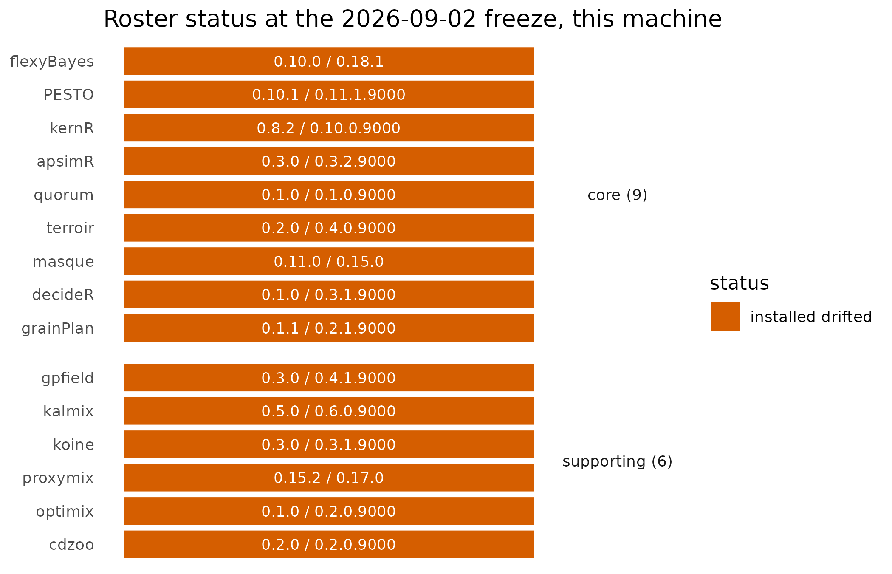

The Crop Analytics Orchestra
Source:vignettes/crop_analytics_orchestra.Rmd
crop_analytics_orchestra.RmdWhy
I have R installed, a nitrogen-rate decision to make, and a
colleague’s word that an “orchestra” of packages can carry it from raw
paddock data to a defensible number; there are fifteen of them, several
are not on CRAN, and before I trust any of it I want to know what is
actually here, what each piece is for, and whether I can check that for
myself rather than take it on faith. What is cropOrchestra,
and how do I find out what I have? This is the question an agronomist,
analyst or breeder asks the first time somebody hands them the Crop
Analytics Orchestra rather than a single package: not “how does the
mathematics work” but “what is actually here, and can I trust the list”.
cropOrchestra answers it directly. It is not itself an
analytical package – it ships no models – it is the front door: a
roster, a version checker, an installer, and a gate runner over the
released members. The other packages in the orchestra take a
grain-production question – which nitrogen rate, which variety, when to
test, when to harvest – from raw data to a recorded decision, and refuse
rather than guess where the evidence does not support one; every
hand-off between them is a typed manifest, every abstention is a typed
refusal rather than a silent NA, and every external fact a
package relies on carries provenance back to its source. When the whole
chain was run end to end on a synthetic barley belt (Study A0), it
returned a headline number that beat a naive baseline by a wide margin;
this vignette does not rerun that chain, so the number itself, and the
sentence that says it is not recomputed here, are held for
Limits. What this vignette does show, on this machine, right
now, is what cropOrchestra itself can check without running
a single crop model: which packages are on the release roster, which of
them are actually installed, and whether the two agree.
What
cao_roster() returns the fifteen-member release roster
frozen on 2026-09-02: nine core members that every study routes
through, and six supporting members that particular studies
need, each row carrying its tier, its necessity-register role, the
max578 repository it publishes through, and whether that
repository is public yet. A member earns its row by answering four
questions in the release’s necessity register: which crop question needs
it, what the nearest tool outside the orchestra is, why that outside
tool does not suffice – one of four admissible reasons: a missing
capability, a contract the pipeline requires that the outside tool
cannot emit, an independent-oracle grounding it does not carry, or a
translation layer that does not exist outside – and where it was
load-bearing in a study, an arbitration, or a fleet gate. The method
statement behind every member is the same three-step discipline: the
orchestra picks the best available method, old or new, its own
or external, adopts or adapts it behind the typed-manifest
contract, and translates it into a grower- or breeder-facing
decision. A member that only adapts an external tool – wrapping it
behind the contract rather than adding new mathematics – is justified by
the contract alone, and the register says so plainly rather than
overstating its novelty.
cao_versions() joins that fixed roster with what this R
session can actually load: an installed_version column read
through requireNamespace() rather than a hard
library() call, so a member whose repository is still
private is reported as not installed rather than raising an error, plus
a match column recording whether the installed version
equals the frozen one.
cao_status() turns that join into a report: every member
classified as installed and matching, installed but drifted, or missing,
and for every missing member, a stated reason – its repository is not
yet public, or it is public but not yet mirrored on
max578.r-universe.dev.
cao_install() installs a tier ("core",
"supporting", "all") or an explicit set of
package names, one member at a time, from the max578
r-universe mirror and CRAN, so one member’s still-private repository
never stops the rest from installing; dry_run = TRUE
resolves and returns the plan without installing anything, which is what
the next section runs.
cao_check() goes one step further than a status report:
pointed at a local ORCHESTRA leader workspace, it runs the fleet’s own
gate scripts – the cross-member refusal contract and the manifest
conformance suite – and reports pass or fail for each; without a
workspace, it falls back to cao_status() plus a load check
of every member that is installed.
Do
The roster, as frozen
roster <- cao_roster()
nrow(roster)
#> [1] 15
attr(roster, "freeze_date")
#> [1] "2026-09-02"| Member | Tier | Role |
|---|---|---|
| flexyBayes | core | the inference hub |
| PESTO | core | simulator inversion + ensemble UQ |
| kernR | core | the mechanism-consistency test |
| apsimR | core | the mechanism member |
| quorum | core | the consensus layer |
| terroir | core | the grounded covariate source |
| masque | core | the sovereignty bridge |
| decideR | core | the decision closer |
| grainPlan | core | the practitioner last mile |
| gpfield | supporting | change-of-support spatial GP |
| kalmix | supporting | state-space + ACI |
| koine | supporting | the fourth opinion |
| proxymix | supporting | the mixture calculus |
| optimix | supporting | the optimisation meta-layer |
| cdzoo | supporting | the causal-discovery harness |
What is actually installed on this machine
cao_status() prints its own report, so the table below
is read straight from the console, not retyped.
status <- cao_status()
#> Crop Analytics Orchestra -- status at freeze 2026-09-02
#> 0 matching, 15 drifted, 0 missing (of 15 members)
#>
#> [I] flexyBayes frozen 0.10.0 installed 0.18.1 (core)
#> [I] PESTO frozen 0.10.1 installed 0.11.1.9000 (core)
#> [I] kernR frozen 0.8.2 installed 0.10.0.9000 (core)
#> [I] apsimR frozen 0.3.0 installed 0.3.2.9000 (core)
#> [I] quorum frozen 0.1.0 installed 0.1.0.9000 (core)
#> [I] terroir frozen 0.2.0 installed 0.4.0.9000 (core)
#> [I] masque frozen 0.11.0 installed 0.15.0 (core)
#> [I] decideR frozen 0.1.0 installed 0.3.1.9000 (core)
#> [I] grainPlan frozen 0.1.1 installed 0.2.1.9000 (core)
#> [I] gpfield frozen 0.3.0 installed 0.4.1.9000 (supporting)
#> [I] kalmix frozen 0.5.0 installed 0.6.0.9000 (supporting)
#> [I] koine frozen 0.3.0 installed 0.3.1.9000 (supporting)
#> [I] proxymix frozen 0.15.2 installed 0.17.0 (supporting)
#> [I] optimix frozen 0.1.0 installed 0.2.0.9000 (supporting)
#> [I] cdzoo frozen 0.2.0 installed 0.2.0.9000 (supporting)
plot_df <- status$versions
plot_df$member <- factor(plot_df$member, levels = rev(plot_df$member))
plot_df$tier_label <- ifelse(
plot_df$tier == "core",
paste0("core (", sum(plot_df$tier == "core"), ")"),
paste0("supporting (", sum(plot_df$tier == "supporting"), ")")
)
plot_df$status_label <- gsub("_", " ", plot_df$status, fixed = TRUE)
ggplot2::ggplot(
plot_df, ggplot2::aes(x = 1L, y = member, fill = status_label)
) +
ggplot2::geom_tile(width = 0.9, height = 0.85, colour = "white") +
ggplot2::geom_text(
ggplot2::aes(label = paste0(
version, " / ",
ifelse(is.na(installed_version), "-", installed_version)
)),
colour = "white", size = 3
) +
ggplot2::facet_grid(tier_label ~ ., scales = "free_y", space = "free_y") +
ggplot2::scale_fill_manual(
name = "status",
values = c(
"installed matching" = "#0072B2",
"installed drifted" = "#D55E00",
"missing" = "#999999"
)
) +
ggplot2::labs(
x = NULL, y = NULL,
title = "Roster status at the 2026-09-02 freeze, this machine"
) +
ggplot2::theme_minimal(base_size = 11) +
ggplot2::theme(
axis.text.x = ggplot2::element_blank(),
axis.ticks.x = ggplot2::element_blank(),
panel.grid = ggplot2::element_blank(),
strip.text.y = ggplot2::element_text(angle = 0)
)
Every roster member at the 2026-09-02 freeze, grouped by tier and coloured by whether the version installed on this machine matches the frozen release, has drifted ahead of it, or is not installed here; the label in each cell reads frozen version / installed version.
Planning an install without touching anything
plan <- cao_install(members = "core", dry_run = TRUE)| Member | Repositories tried |
|---|---|
| flexyBayes | https://max578.r-universe.dev, https://cloud.r-project.org |
| PESTO | https://max578.r-universe.dev, https://cloud.r-project.org |
| kernR | https://max578.r-universe.dev, https://cloud.r-project.org |
| apsimR | https://max578.r-universe.dev, https://cloud.r-project.org |
| quorum | https://max578.r-universe.dev, https://cloud.r-project.org |
| terroir | https://max578.r-universe.dev, https://cloud.r-project.org |
| masque | https://max578.r-universe.dev, https://cloud.r-project.org |
| decideR | https://max578.r-universe.dev, https://cloud.r-project.org |
| grainPlan | https://max578.r-universe.dev, https://cloud.r-project.org |
# Installs whatever in the plan above is not already present. Skipped here
# because rendering this vignette must never modify the R library it runs
# in; run this line yourself against your own library to install the core
# tier for real.
cao_install(members = "core")Checking the fleet’s own gates
check_fallback <- cao_check()
check_fallback$n_loadable
#> [1] 15
check_fallback$n_load_failed
#> [1] 0
# Needs a local ORCHESTRA leader workspace (not shipped with this package)
# whose integration/ directory holds the fleet's gate scripts. Skipped here
# because the path below is specific to the machine this vignette was
# written on, not portable to a reader's own layout.
cao_check(workspace = "/path/to/ORCHESTRA_dev")Read
Of the 15 roster members, 9 are core and 6 are supporting; 8 of the
15 (53 per cent, roughly half) are on a private repository at the freeze
date, and cao_status() says so plainly, member by member,
rather than presenting a partial install as if the roster installs in
full today.
On the machine this vignette was rendered on, 0 members match their frozen version exactly and 0 are missing. 15 members have drifted ahead of its frozen version rather than behind it: flexyBayes (frozen 0.10.0, installed 0.18.1), PESTO (frozen 0.10.1, installed 0.11.1.9000), kernR (frozen 0.8.2, installed 0.10.0.9000), apsimR (frozen 0.3.0, installed 0.3.2.9000), quorum (frozen 0.1.0, installed 0.1.0.9000), terroir (frozen 0.2.0, installed 0.4.0.9000), masque (frozen 0.11.0, installed 0.15.0), decideR (frozen 0.1.0, installed 0.3.1.9000), grainPlan (frozen 0.1.1, installed 0.2.1.9000), gpfield (frozen 0.3.0, installed 0.4.1.9000), kalmix (frozen 0.5.0, installed 0.6.0.9000), koine (frozen 0.3.0, installed 0.3.1.9000), proxymix (frozen 0.15.2, installed 0.17.0), optimix (frozen 0.1.0, installed 0.2.0.9000), cdzoo (frozen 0.2.0, installed 0.2.0.9000).
Of the 15 installed members here, 15 load cleanly through
requireNamespace() and 0 do not. The figure shows the same
three-way split by tier: a reader can see at a glance whether drift,
where it exists, clusters in the core tier every study routes through or
in the supporting tier particular studies need, which the roster table
above does not show without reading all 15 rows.
Limits
This vignette shows what cropOrchestra itself can
determine without touching a crop model: a roster, a version comparison,
and a load check. It does not run apsimR, does not fit
anything through kernR or flexyBayes, and does
not price a decision through decideR – it cannot speak to
whether any member’s science is correct, only to whether the member is
present and at the frozen version. The install call above is a dry run
for the same reason cao_check(workspace = ...) above is not
evaluated: rendering this vignette must never modify the R library it
runs in, and the workspace path is specific to the machine it was
written on rather than portable to a reader’s own layout; a reader who
wants either result runs the commands shown, verbatim, against their own
library and their own copy of the ORCHESTRA leader workspace.
The headline claim behind the necessity register – that when the
roster’s core chain (apsimR + quorum +
PESTO as the mechanism lens, kernR as the
field-agreement lens, decideR as the decision lens,
optimix as the site-value lens, and grainPlan
as the grower-facing translation) was run end to end on a synthetic
barley belt, the orchestra’s cascade lost 2,960 AUD per hectare against
the planted truth over 198 decision cells, against 5,818 AUD per hectare
for a naive mechanism-only arm – 49 per cent less loss, reproducing on a
re-seeded belt – is not recomputed in this vignette; it is cited to
Study A0’s own ledger (studies/A0/REPORT.md and
SUMMARY.md in the ORCHESTRA leader workspace) and should be
read there, not trusted from this paragraph alone. It is a controlled
recovery exercise on a synthetic belt, not a real one: the shape of the
result has real-data cover – the belt’s nitrogen-response slopes
partially bracket a real barley multi-environment trial – but the
magnitudes do not, and they should never be quoted as a field result.
cao_status() and cao_check() exist precisely
so a claim like this one is always read alongside what is actually
installed and actually gated on the machine making the claim, not
asserted from memory.
Everything numeric in Read above describes one machine at one moment: a different library, a package upgraded after this vignette was rendered, or the roster’s next freeze would all change the counts without changing anything this vignette asserts about how to find them out.
What to read next
A quorum of lenses on Study A0 (in quorum)
resolves the same 200 recorded decision cells the headline number above
comes from, lens by lens, and is the closest a reader can get to the
cascade’s mechanics without rerunning the study. From an inference
result to a grain plan (in grainPlan) picks up exactly
where this front door leaves off, turning a manifest-typed inference
result into a grower-facing plan. Getting started with decideR
introduces the decision lens the headline cascade above relies on.
Reproduce
This vignette draws no random numbers and calls no external service: every table and figure is a deterministic function of the roster shipped inside this package and of what is installed in the R library it is rendered against, which is why the counts above are read live rather than typed by hand.
sessionInfo()
#> R version 4.6.1 (2026-06-24)
#> Platform: x86_64-pc-linux-gnu
#> Running under: Ubuntu 24.04.5 LTS
#>
#> Matrix products: default
#> BLAS: /usr/lib/x86_64-linux-gnu/openblas-pthread/libblas.so.3
#> LAPACK: /usr/lib/x86_64-linux-gnu/openblas-pthread/libopenblasp-r0.3.26.so; LAPACK version 3.12.0
#>
#> locale:
#> [1] LC_CTYPE=C.UTF-8 LC_NUMERIC=C LC_TIME=C.UTF-8
#> [4] LC_COLLATE=C.UTF-8 LC_MONETARY=C.UTF-8 LC_MESSAGES=C.UTF-8
#> [7] LC_PAPER=C.UTF-8 LC_NAME=C LC_ADDRESS=C
#> [10] LC_TELEPHONE=C LC_MEASUREMENT=C.UTF-8 LC_IDENTIFICATION=C
#>
#> time zone: UTC
#> tzcode source: system (glibc)
#>
#> attached base packages:
#> [1] stats graphics grDevices utils datasets methods base
#>
#> other attached packages:
#> [1] cropOrchestra_0.1.2.9000
#>
#> loaded via a namespace (and not attached):
#> [1] sass_0.4.10 generics_0.1.4 apsimR_0.3.2.9000
#> [4] decideR_0.3.1.9000 digest_0.6.39 magrittr_2.0.5
#> [7] evaluate_1.0.5 grid_4.6.1 RColorBrewer_1.1-3
#> [10] koine_0.3.1.9000 fastmap_1.2.0 jsonlite_2.0.0
#> [13] kernR_0.10.0.9000 PESTO_0.11.1.9000 scales_1.4.0
#> [16] quorum_0.1.0.9000 textshaping_1.0.5 jquerylib_0.1.4
#> [19] cli_3.6.6 rlang_1.3.0 cdzoo_0.2.0.9000
#> [22] withr_3.0.3 cachem_1.1.0 yaml_2.3.12
#> [25] otel_0.2.0 optimix_0.2.0.9000 tools_4.6.1
#> [28] terroir_0.4.0.9000 flexyBayes_0.18.1 dplyr_1.2.1
#> [31] ggplot2_4.0.3 kalmix_0.6.0.9000 vctrs_0.7.3
#> [34] R6_2.6.1 grainPlan_0.2.1.9000 lifecycle_1.0.5
#> [37] gpfield_0.4.1.9000 fs_2.1.0 ragg_1.5.2
#> [40] pkgconfig_2.0.3 desc_1.4.3 pkgdown_2.2.1
#> [43] pillar_1.11.1 bslib_0.12.0 gtable_0.3.6
#> [46] glue_1.8.1 data.table_1.18.6.1 proxymix_0.17.0
#> [49] Rcpp_1.1.2 systemfonts_1.3.2 xfun_0.62
#> [52] tibble_3.3.1 tidyselect_1.2.1 knitr_1.52
#> [55] farver_2.1.2 masque_0.15.0 htmltools_0.5.9
#> [58] labeling_0.4.3 rmarkdown_2.32 compiler_4.6.1
#> [61] S7_0.2.2